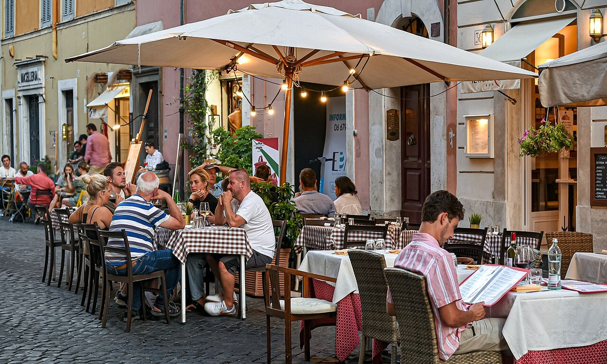

Where to Eat Near the Vatican

The best places to eat near the Vatican are a few blocks back from St. Peter's Square, in the Prati and Trionfale neighbourhoods, not on the tourist streets right by the walls. For a quick bite, Pizzarium (Bonci) does Rome's best pizza by the slice near Cipro metro, and the Trionfale market is great for cheap, fresh food. For a proper sit-down meal, Roman trattorias like Il Segreto, Arlù, and Romané serve the classics. Finish with gelato at Hedera or Gelateria dei Gracchi. The museums also have cafes inside if you just need a break.
Where to eat near the Vatican is a real question, because the streets closest to St. Peter's Square are lined with tourist restaurants serving overpriced, forgettable food.
The good news is that some of the best eating in Rome is just a short walk away, in the local neighbourhoods behind the Vatican, where the prices drop and the quality jumps.
This guide sorts it out by what you need: quick bites between sights, proper Roman meals, coffee and gelato, and options for special diets, all real places that locals use.
📋 In This Guide
🎟 Top Vatican Tickets & Tours
The One Rule: Walk Away From St. Peter's
If you remember one thing, make it this: do not eat on the streets right next to St. Peter's Square or along Borgo Pio. Those spots live off one-time tourists and the food shows it, with high prices and microwave meals.
Walk five to ten minutes north into the Prati or Trionfale neighbourhoods and everything changes. These are real residential areas where Romans live and eat, so the trattorias, pizza counters, and cafes have to be good to survive.
The handful of exceptions near the Vatican itself are noted below, but the rule of thumb holds: a few blocks of walking buys you much better food.
Quick Bites Near the Vatican
If you want to eat fast between the Museums and St. Peter's, these are the local favourites:
- Pizzarium (Bonci), near Cipro metro, is widely called Rome's best pizza al taglio, pizza by the slice sold by weight, with long-risen dough and creative seasonal toppings. It gets a lunchtime queue, so go a little early or late.
- Panificio Bonci on Via Trionfale is the same baker's shop and a quieter alternative at lunch.
- Mercato Trionfale, Rome's largest food market, is a few minutes further and great for a cheap, fresh lunch, including porchetta panini and tramezzini sandwiches.
- Trapizzino and other street-food counters around Piazza del Risorgimento do a good filled pizza-pocket if you want to eat on the move.
Sit-Down Roman Trattorias
For a proper meal of Roman classics like carbonara, amatriciana, and cacio e pepe, these trattorias are a short walk from the Vatican:
- Il Segreto (Via Candia), a classic Roman trattoria about five minutes from the Museums, good for the pasta staples.
- Ristorante Arlù in Borgo, a family-run trattoria since 1959 and one of the rare good options close to St. Peter's, with outdoor tables in warm weather.
- Romané (Via Cipro), Roman cooking from Stefano Callegari, the man behind Trapizzino, strong on carbonara, amatriciana, and traditional offal dishes.
- Antico Falcone, a traditional trattoria known for its Thursday gnocchi and outdoor seating.
- La Pratolina in Prati, for Roman pinsa, a lighter, oval cousin of pizza, with craft beer and wine.
It is worth booking a table at the sit-down places in the evening or for Sunday lunch, when they fill up.
Coffee, Breakfast, and Aperitivo
- Sciascia Caffè 1919 (Via Fabio Massimo) is a historic Prati coffee bar famous for its espresso served with dark chocolate in the cup. A great morning stop before the Museums.
- Sorpasso in Prati is a bar, deli, and dining room in one, good for a seasonal lunch or an evening aperitivo with Italian cured meats and cheese.
- Most Roman bars also do a quick, cheap breakfast of a coffee and a pastry standing at the counter, which is how locals start the day.
Gelato and Sweets
- Hedera on Borgo Pio is a small-batch gelateria using organic-farm ingredients, with a short seasonal menu rather than dozens of flavours. One of the few genuinely good spots right by the Vatican.
- Gelateria dei Gracchi (Via dei Gracchi) is a Prati favourite with over fifty natural seasonal flavours, including vegan and lactose-free options.
- Pompi, with a branch near Piazza del Risorgimento, is known across Rome for its tiramisu, sold in classic and fruit varieties.
Vegan, Gluten-Free, and International
- La Soffitta Renovatio in Prati does certified gluten-free pizza and pasta, a safe bet for coeliacs, alongside a normal menu.
- Flower Burger (Via dei Gracchi) is a colourful vegan burger spot, good for a quick, meat-free lunch.
- Mezé (Via Properzio) is an affordable Middle-Eastern bistro with couscous, kebabs, and mezze, a change from Italian food.
Opening days vary and some of these close one day a week, so check current hours before you set out, especially on Sundays and Mondays.
Eating Inside the Vatican Museums
If you would rather not leave, the Vatican Museums have food inside, including a self-service restaurant, a bistro, and cafes along the route, where you can sit down or grab a coffee and a snack.
Prices are what you would expect inside a major attraction, so it is convenience over value, but it saves you leaving and coming back, as the ticket is single entry.
Remember you cannot eat your own food in the galleries, which our things to know before you go guide covers.
Many visitors time their day to tour first and eat properly afterwards in Prati. Book a skip-the-line entry ticket and plan lunch for when you come out.
Frequently Asked Questions
Where should I eat near the Vatican?
A few blocks back from St. Peter's, in the Prati or Trionfale neighbourhoods, where locals eat. Try Pizzarium for pizza by the slice, a Roman trattoria like Il Segreto or Arlù for a sit-down meal, and Hedera or Gelateria dei Gracchi for gelato.
Where do locals eat near the Vatican?
In Prati and Trionfale, not on the tourist streets by the square. Spots like Pizzarium, the Trionfale market, Romané, and Sciascia Caffè are local favourites a short walk from the Museums.
Is there food inside the Vatican Museums?
Yes. There is a self-service restaurant, a bistro, and cafes inside, so you can eat without leaving. Prices are higher than outside, but it is handy since the ticket is single entry and you cannot bring your own food into the galleries.
Where is the best pizza near the Vatican?
Pizzarium by Bonci, near Cipro metro, is widely rated Rome's best pizza al taglio. For a sit-down pizza or pinsa, La Pratolina in Prati is a good choice.
How do I avoid tourist-trap restaurants near the Vatican?
Walk away from St. Peter's Square and Borgo Pio, which are full of them, and head north into Prati or Trionfale. A five to ten minute walk gets you much better food at lower prices.
Where can I get a quick lunch between St. Peter's and the Museums?
Grab pizza by the slice at Pizzarium or Panificio Bonci, a panino at the Trionfale market, or a trapizzino near Piazza del Risorgimento. All are quick, cheap, and a short walk from both sights.
Related Vatican Visitor Guides